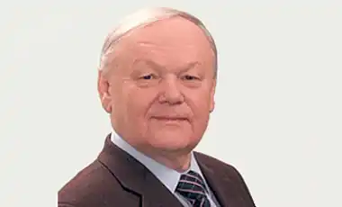

БОРИС ОЛІЙНИК
(Нар. 1935 p.)
Народився Борис Ілліч Олійник 22 жовтня 1935р. в с. Зачепилівка на Полтавщині. Вірші почав писати в шкільному віці. Він "топтав стежку до п'ятого класу Зачепилівської семирічки", коли побачив у новосанжарівській райгазеті "Ленінським шляхом" свій невеличкий вірш і своє прізвище. 1953р., після закінчення шкільного навчання, вступив на факультет журналістики Київського університету імені Т. Г. Шевченка, а вже 1958р. розпочав роботу в редакції газети "Молодь України". Поет і журналіст, часто їздив у відрядження, зокрема на ударну комсомольську будову — Лисичанський хімкомбінат, про неї ж і про молоде місто Сєвєродонецьк надрукував у газеті серію нарисів і видав документальну повість "За Сіверським Дінцем" (1959). Пережите в дитинстві та в роки молодості склало основу першої його збірки поезій "Б'ють у крицю ковалі" (1962). Друга збірка — "Двадцятий вал" (1964), відзначена Республіканською комсомольською премією ім. М. Островського. Б. Олійник пише своєрідні віршовані "портрети" — монологи про сільських трудівників, як-от хворого хлібороба ("Про хоробрість"), інваліда з фронту ("Дядько Яків"), "співрозмову" зі скромною вчителькою В. І. Левкович ("Формула"), присвячений М. Рильському вірш "Пісня", автобіографічні нотатки "Про себе". Виходять збірки "Вибір" (1965), "Коло" (1968), "Відлуння" (1970), "Рух" (1973). Вражає різноманітність поетичної творчості Олійника: задушевно-ліричне слово про матір ("Мати"); філософський роздум про непорушність зв'язку людини із землею ("Заземлення"); сокровенне, інтимне ("Дума про Аеліту", "Ти чекай..."); лірика, сповнена драматизму та конфліктності: "Балада про вогонь і принципи", "Ринг", "Триптих пильності", "Засторога", ряд віршів з циклу "Коло" та ін.; публіцистичність у "Триптиху пильності" та в такому ж чілійському триптиху "На тривожній струні". Ліризму сповнені цикли "Сковорода і світ", "Досвід", "На лінії тиші", "При гончарному крузі. Олесеві Гончару", "Сиве сонце моє. Пам'яті матері". Навпаки, драматичні, гострі поезії — "В рамі прицілу", "Прометей приручений", "Про черги", "Погоня... І постріл...". Поет застосовує також умовність, вигадку, елементи казки, фантастики, алегоричну та символічну образність у таких творах, як "Принцип", "Про середину", "Притча про ноги", "Притча про славу", "У поета гроші завелись" та ін. У збірці "Заклинання вогню" (1978) поет вмістив цикл віршів "Від Білої хати до Білого дому..." Найбільш відомими та значними поемами Б. Олійника є: — поема "Сиве сонце моє", укладена із дев'яти віршів, написаних різними розмірами; — "Дорога"; — "Рух"; — "Доля"; — "Урок"; — поема-цикл "У дзеркалі слова"; — поема, історичний твір "Дума про місто", написана до 1500-ліття Києва. Поет є лауреатом Державної премії СРСР (1975, за книгу "Стою на земле") і Державної премії УРСР ім. Т. Г. Шевченка (1983, за книги "Сива ластівка", "У дзеркалі слова", "Дума про місто"). Свою творчу роботу він завжди поєднував з активною громадською діяльністю. В 1971 — 1973pp. та з 1976-го року він — секретар правління Спілки письменників України, секретар правління Спілки письменників СРСР, секретар парткому Київської письменницької організації. Був депутатом Верховної Ради УРСР 10-го і 11-го скликань.